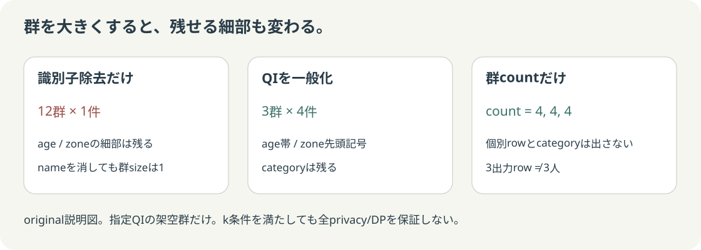

まず予想：列を消すと、群は大きくなる？
直接識別子を消しても、残る列の組合せが1件しかないrowはあります。群サイズと、残せる情報を両方比べてください。
保存原票の説明モデル
Pythonの群計算
指定QI上の最小群サイズ
count集計を選んでも、ここは集計前の元microdata群を数えます。
全privacy保証ではない
このsize条件の結果
kは検査閾値。変更しても変換処理は変わりません。DP・再識別確率・属性保護の保証ではありません。
群のsizeを図で見る
棒1本が同じ指定QIの元レコード群。破線は選択したk。図の数値は保存済み実行原票です。
zoneは架空の記号です。棒の高さは現実のriskやprivacy scoreではありません。
実際に出す列とrowを確認
name / synthetic_idはどの出力形式にもありません。auditのsynthetic lineageとrelease列は別です。
残る情報
失う細部と未検証
loss/utilityの定量的最適化、外部auxiliary、属性開示/l-diversityは未教材です。
元の架空入力12件を見る（releaseではない）
| synthetic_id | name | age | zone | category |
|---|
空・null・不正入力の境界
空table
min群size =
size条件 =
空だから合格とは扱わない。
null age
nullを同じ安全群として数えず、明示拒否。
欠損列 / 不正k
捨てて成功扱いにせず、入力契約で拒否。
情報の粗さも比較する

original説明図。一般化でもcategoryは残る。k条件が満たされても全privacyやdifferential privacyを保証しません。
原典 → 実装 → 答え合わせ
全件架空。実在個人へのlinkageは行っていません。指定QIの群計算だけであり、DP・匿名化の安全認定・法的適合・Subject全体の完成を主張しません。